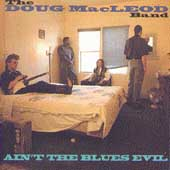
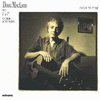
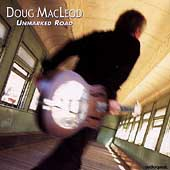
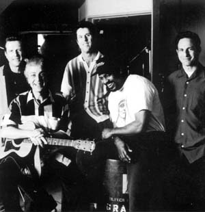
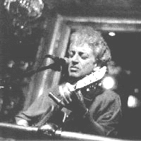

DOUG MACLEOD
Intro
(конспект <ВЭБ>,
весна 1998)
 Дугу
МакЛеоду за
пятьдесят. Что означает, что начинал он в 60-е, на
волне электро-блюза. С электрическим "Doug MacLeod
Band" он и выступал многие годы, принимая участие
в престижных блюзовых фестивалях и записав
несколько альбомов. Однако пять лет назад он
распустил группу и вернулся к акустическому
звучанию. Теперь основным его инструментом
является гитара типа NATIONAL, деревянный корпус,
металлический резонатор, фирмы Тейлора.
Акустический блюз в записи требует особого
искусства от звукорежиссера – чтобы переданы
были все тончайшие нюансы. Неудивительно, что
акустические альбомы Дуга МакЛеода выходят на
фирме «AUDIOQUEST»,
которая очень ревностно относится к искусству
передачи звука. Слушая аудиоквестовские альбомы
МакЛеода, сделайте звук погромче – и оцените
достижения «Аудиоквеста» в деле звукозаписи
щелчков, щипков и естественного эха.
Дугу
МакЛеоду за
пятьдесят. Что означает, что начинал он в 60-е, на
волне электро-блюза. С электрическим "Doug MacLeod
Band" он и выступал многие годы, принимая участие
в престижных блюзовых фестивалях и записав
несколько альбомов. Однако пять лет назад он
распустил группу и вернулся к акустическому
звучанию. Теперь основным его инструментом
является гитара типа NATIONAL, деревянный корпус,
металлический резонатор, фирмы Тейлора.
Акустический блюз в записи требует особого
искусства от звукорежиссера – чтобы переданы
были все тончайшие нюансы. Неудивительно, что
акустические альбомы Дуга МакЛеода выходят на
фирме «AUDIOQUEST»,
которая очень ревностно относится к искусству
передачи звука. Слушая аудиоквестовские альбомы
МакЛеода, сделайте звук погромче – и оцените
достижения «Аудиоквеста» в деле звукозаписи
щелчков, щипков и естественного эха.
Родился он в неподходящем дл
блюзмэна местечке – в Нью-Йорке, 12 апреля 1946г.
- в музыкальной семье: мать исполняла
классическую музыку; дед был шотландским,
собственно, "гэльским" певцом, и выпустил
несколько пластинок на «RCA». Маленький МакЛеод
заикался, пение было одним из уроков по
преодолению этого недостатка. Потом взял в руки
гитару, дружок показал несколько аккордов… в
школьные годы играл на бас-гитаре в рокнролльных
группах… Семья переехала в Сент-Луис, и здесь Дуг
впервые попал на блюзовый концерт – это было
выступление БиБиКинга, и впервые узнал, что такое
блюз. Он вспоминает: "Я был поражен звуком. Я-то
думал, блюз – это печальная плачущая музыка, но
тут я увидел, что все весело пляшут под музыку
БиБи… И я просто влюбился в нее». В Сент-Луисе Дуг
МакЛеод жил до призыва в армию, в военно-морские
силы США. В отличие от службы некоторых других
армиях, NAVY не оторвала его от жизни на два-три
года. Наоборот, именно проходя службу в Норфолке,
он познакомился с некоторыми настоящими
блюзмэнами, получил от них важнейшие уроки и
принялся за блюз всерьез.
NECESSARY CLOTHERS
С Эммилоу Хэррисом и Джюсом
Ньютоном Дуг МакЛеод выступал в клубах Норфолка.
И здесь познакомился с человеком, который стал
его ментором и гуру в том, как жить и как играть
блюз. Это был одноглазый ERNEST BANKS (Эрнест
Бэнкс). «В то время,- рассказывает МакЛеод,-
носил нечто вроде блюзовой униформы: разбитые
шузы, драные джины, старую рубаху х.б, потертый
жилет… И я даже тер свой гитарный кейс о стену,
чтобы все было как будто я блюзмэн. Бэнкс научил
меня, что блюз не имеет никакого отношения к тому,
как я выглядел. Он учил меня: «Черт возьми, нужно
стараться выглядеть как можно лучше. Если у теб
сорок долларов, из которых только две бумажки
десятками, а остальные – по одному, обязательно
старайся, чтобы люди видели у тебя в руках пачку
денег, и верхние – чтобы были десятки. Но блюз –
это не то, что у тебя снаружи, или в кошельке. Это
то, что у тебя внутри. Блюз – это правда, и все –
вот так просто. Может, из-за этого его так сложно
сыграть».
ЭРНЕСТ БЭНКС:
BLUES AIN’T WHAT YOU GOT GOING ON THE OUTSIDE. IT’S
WHAT YOU GOT GOING ON THE INSIDE. BLUES IS TRUTH; IT’S THAT
SIMPLE. MAYBE THAT’S WHAT MAKES
IT SO HARD TO PLAY. NEVER PLAY A NOTE YOU DON’T BELIEVE.
И еще один совет, который Дуг
МакЛеод получил от Эрнста Бэнкса: «Никогда не
играй ноту, которой не веришь».
Сегодня у Дуга МакЛеода – более
трех с половиной сотен блюзов собственного
сочинения, его песни записывали ALBERT KING
(Алберт Кинг) и ALBERT COLLINS (Алберт Коллинз), SON
SEALS (Сон Сиалз) и PAPA JOHN CREACH (Папа Джон
Крич) – и многие другие признанные блюзмэны. Он и
сам чрезвычайно серьезно относится к своим
песням, и, видимо, блюзмэны в его песнях не
встречают нот, в которые не верится.
От Эрнеста Банкса Дуг МакЛеод
получил совет и поважнее, чем то, как изображать
богача, имея сороковник в кармане.
«Нет, он не присаживался, чтобы
научить меня как настраивать гитару, как играть
на струнах. Совсем нет, - говорит МакЛеод,- Он
играл и пел, и если ты успевал схватить, значит
схватывал. Если нет, он решал, что, значит, тебе
все равно не дано это понять. Таков он был. Я
помню, как спрашивал его о строе, и он отвечал:
"это перекрестный", или "это вестапул",
или "а вот этот – испанский". Но он не
говорил: отпусти эту струну, настрой эту на ре, а
эту на фи диез. Он перенастраивал свою гитар, а
потом смотрел на меня одним глазом и спрашивал:
«усек, парень?» И я говорил: «Ага». И надеялся, что
действительно понял».
«Однажды я сказал ему, - вспоминает
МакЛеод»,- «Мужик, я хочу сочинять песни. Но
ничего не знаю об адских гончих, уборке хлопка,
перекрестках и прочем. Бэнкс ответил: "Ты был
когда-то одинок, было тебе когда-то больно, терял
ты надежду? Это и есть блюз, сынок. Пиши и пой о
том, что знаешь. Вот и все, что требуется».
Первые свои песни в клубах Норфолка
Дуг МакЛеод частенько объявлял как забытый номер
из репертуара Мадди Уотерса или Хаулин Вулфа. Но
постепенно набирал уверенности и опыта. По
окончанию службы он всерьез занял музыкой,
овладел нотной грамотой, учился в престижной
музыкальной школе Беркли в Бостоне. В 1974
стал профессиональным музыкантом, работал на
сессиях в студии и на гастролях. В 1976 стал
музыкальным руководителем группы певицы Мэри
МакГрегор, которая тогда была в полном ажуре в
мажоре, с хитом «кручусь меж двух любимых,
чувствую себя дурой. Любить ведь вас обоих – это
не по правилам» - сладкий попс с легкой примесью
кантри. В программе концерта МакЛеоду отводилось
время блеснуть гитарной игрой. Но он на
собственной шкуре убедился, что для блюзмэна –
деньги не главное, и ушел от «нормальной
музыкальной работы» к музыке без работы.
В 1979 Дуг МакЛеод
познакомился с GEORGE “HARMONICA” SMITH
(Джорджем «Гармоникой» Смитом), который стал его
вторым учителем в блюзе. Вместе они организовали
блюзбэнд. Репутация Дуга МакЛеода как гитарного
виртуоза росла, его стали приглашать на запись
такие блюзовые титаны как BIG JOE TURNER (Биг
Джо Тернер), PEE WEE CRAYTON (Пи Уи Крэйтон), BIG
MAMA THORNTON (Биг Мама Торнтон), EDDIE “CLEANHEAD”
WILSON (Эдди «Чистая башка» Уилсон), LOWELL FULSON
(Лоуэлл Фулсон) – что за имена!
В 1984 вышел альбом “NO
ROAD BACK HOME” (Hightone Records). Дебют получил сразу три
номинации в основных номинация на премию имени W.C.HANDY
(ВК Хэнди): “Лучший новый артист”, «Лучший альбом
года» и «Лучшая песня года». (Успех тем более
примечателен, что альбом состоял только из песен
сочинения МакЛеода). Блюзовый эстаблишмент,
очевидно, принял песни белого из Нью-Йорка,
который мало что знал о миссиссипском хлопке и
перекрестках. И хотя "Your Bread Ain't Done" так и не
удостоилась премии “Лучшая песня года”, но зато
сам ALBERT KING включил ее в свой альбом «I'm In
A Phone Booth, Baby»! Признание Короля, возможно, весомее,
нежели формальная премия.
Следующие два альбома были записаны и
опубликованы в Германии, фирмой STOMP RECORDS:
1987 - WOMAN IN THE STREET
1989 - 54th AND VERMONT
За эти годы он еще дважды
номинировался на «W.C.HANDY» в категории «Лучша
новая песня», и его песни включили в свои альбомы
корифеи: Алберт Кинг и Алберт Коллинз.

В 1991 на фирме VOLT RECORDS
выходит его последний альбом, записанный с
группой: “AIN’T THE BLUES EVIL” (“Блюзы ли не зло?!»,
«Блюзы ль не ужасны?!»). В записи принимал участие
харпист ROD PIAZZA. В альбоме есть песня,
посвященная памяти SRV.
В течение 2 лет Д.МакЛеод вел по
субботам 4-х часовую радиопрограмму «Blues Highway» на
радио “EuroJazz” (кабельное радио со штаб-квартирой
в Амстердаме, имеющее 2, 4 млн. подписчиков по
всему континенту).
МакЛеод вернулся к
своей первой любви – к акустическому блюзу,
отметив возвращение первым своим альбомом на
AUDIOQUEST

1992 – COME TO FIND (С участием CHARLIE MUSSELWHITE)
Альбом переиздавался для аудифилов.
1994 – YOU CAN’T TAKE MY BLUES. В записи принимал
участие харпист CAREY BELL. Звучание этого
альбома, переизданного в аудиофильской серии в 1997г.,
отмечено престижной премией «Golden Note Award for The Best
Original Recording of 1997 from The Academy For The Advancement Of High End Audio». С
тех пор он регулярно выступал на ежегодных
стереофильских фестивалях «Stereophile Hi-Fi Shows»
Альбом 1997г. “UNMARKED ROAD” –
«Неотмеченная дорога» – его третий альбом,
записанный в акустическом качестве дл
«Аудиоквеста».

На конверте перечислены его
“любимые певцы-композиторы: BIG BILL BROONZY, BLIND
WILLIE McTELL, BROWNIE McGHEE, J.B.LENOIR, LIGHTNING
HOPKINS, ROBERT JOHNSON, SON HOUSE, LEADBELLY
– это только некоторые».

Блюз Дуга МакЛеода – домашнего
приготовления. Что не означает «любительский» -
это высокопрофессиональная и виртуозная игра;
что означает – сделанный не на конвейере, не на
потоке; это - штучный товар, и, значит, сделанный с
душой. Как в шутку и всерьез поет Дуг МакЛеод: «с
домашней кухней – ничто не сравнится». И это блюз
нескованный! Кстати, несколько песен в альбоме
родились именно из студийных импровизаций; так
это было с “HOME COOKING”, так и с «I WANT YOU». В последней
за роялем – в неожиданной роли – JOHN “JUKE“ LOGAN
(Джон «Джюк» Логан), признанный мастер губной
гармоники; которого впервые на этой записи
услышал в роли пианиста. Такая легкая, но
собранная импровизация возможна только дл
музыкантов, разделяющих одни музыкальные
пристрастия и связанных давней дружбой. Отчего
песня полна еще и дружескими подтруниваниями
друг над другом; и все сыграно с истинно блюзовым
чувством юмора и такта. Единственный
“принципиально” электрический инструмент
появляется в песне “ROLL LIKE A RIVER”, это орган “HAMMOND
B-3”, на нем играет MICHAEL THOMPSON. Впрочем. И JEFF
TURMES не везде играет аккустический бас.
Ударные – STEVE MUGALIAN, но барабаны звучат
менее, чем в половине песен. И альбом оставляет в
целом ощущение кристально чистой акустики,
сольного гитарного блюза, лишь изредка очень
деликатно приправленного другими инструментами.
UNMARKED ROAD - заглавная песня – в духе
спиричуэлса, исполнена трио: Дуг МакЛеод (v,g), OLIVER
BROWN (perc) и CLYDENE JACKSON (voc). Голос ее –
черен и силен. Он вновь звучит в песне ROLL LIKE A RIVER,
но уже в составе женского трио.
Примичательно, что альбом
окольцован блюзами со словом «дорога» в
названии.
OLD COUNTRY ROAD -
«cтарая сельская дорога»: «Доброе утро, вечер.
Доброе утро вечер, ты застал меня на старой
дороге. Я должен выгулять свой блюз – не знаю, дл
этого как далеко мне нужно пройти».

Выступление
Дуга МакЛеода на KING BISQUIT BLUES FESTIVAL в 1997г.